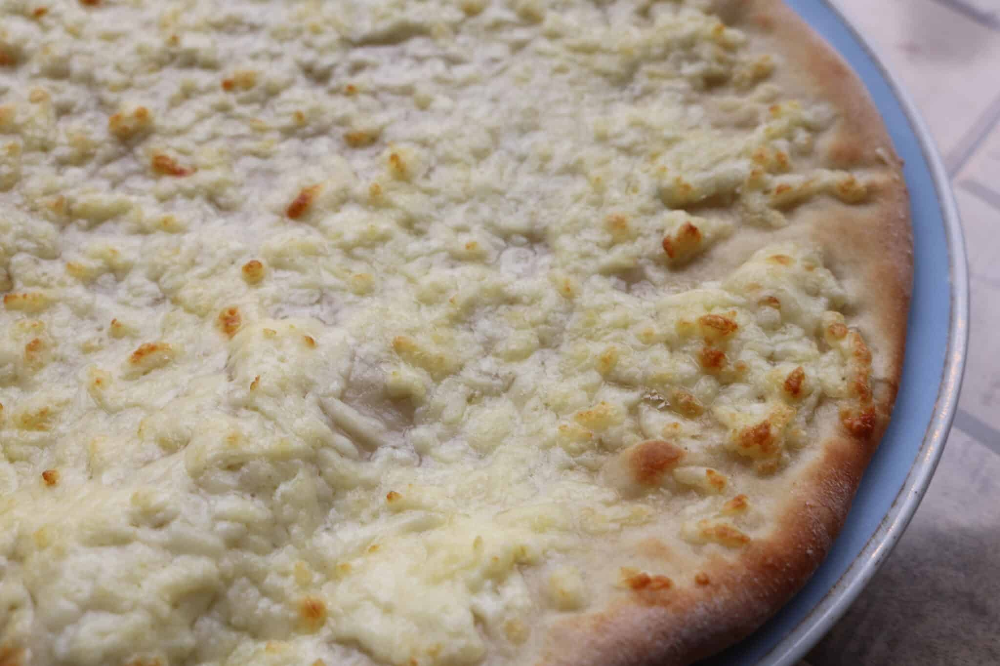
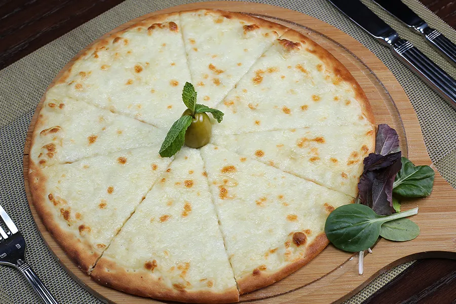
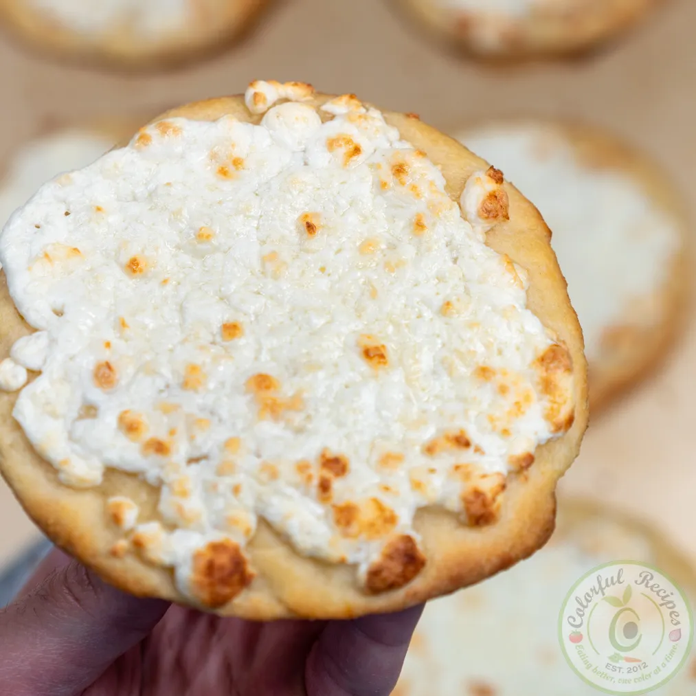

Manakish, or in singular form man'ousheh, or other spellings,
is a popular Levantine food consisting of dough topped with za'atar,
cheese, or ground meat. It can be sliced or folded, and it can be served either for breakfast or lunch.



Ingredients
For the cheese topping
500 g Akkawi cheese (baladi or chikkie)
vegetable or mild olive oil (for brushing)
For the manakish dough
3 cups bread flour
1 cup of lukewarm water
1 tablespoon of dried active yeast
1 teaspoon of salt
½ teaspoon of sugar
4 tablespoon mild olive oil
Method
To prepare the cheese
If you are using akkawi baladi cheese, grate it in a bowl and set aside.
If you are using Akkawi chikkie cheese, then grate the cheese and soak it in a bowl of water for half an hour before.
Drain in a sieve then squeeze out the extra moisture with your hands and set aside
To make the Dough
Add the sugar to the luke warm water along with the dried active yeast and stir well until it dissolves.
Leave for 10-15 minutes allowing the yeast to bubble.
In a large bowl, add the salt and flour, oil and yeast liquid and bring together until you have a smooth ball.
If the dough is too dry add a little water 1 tablespoon at a time until it comes together. Adjust with more flour if it is too sticky.
Then turn out into a floured surface and knead for 5-10 minutes so the dough springs back slightly when you poke it.
If you are using a stand mixer, knead the dough for approximately 8 minutes.
Place the kneaded dough ball into a large bowl and cover with cling film or a damp cloth.
Leave to rise for at least 2 hours or until doubled in size.
To make the Manakish
Preheat the oven on your highest setting and make sure it is well heated before putting in the manakish.
Divide the dough into 8 manakish balls, dust lightly with flour and cover with a teacloth.
Roll out a dough ball between 3-5mm thick, dusting with extra flour to avoid sticking.
Brush on a little vegetable or mild olive oil, and add a fair amount of cheese spreading it with your hands and leaving a small margin.
Lightly dimple the surface with three outstretched fingers a few times.
Bake until the cheese bubbles and the manakish start to brown on the outside, turning if necessary to get an even bake.